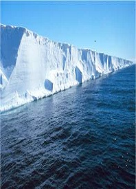
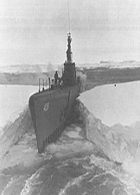

Teorias de la antartida
Un mundo detras del muro de Ross:
De acuerdo con esta idea, detras de la barrera de hielo de Ross, la cual es la plataforma de hielo mas grande del mundo,
podria encontrarse una ciudad desconocida e incluso un mundo entero nuevo para la humanidad.
La altura del muro alcanza hasta los 50 metros de altura y tiene un area aproximada de 487 mil kilometros cuadrados.Ademas, la ubicacion y dimension del muro,
han hecho que se sepa muy poco del lugar, lo que dio el paso a la creencia de que al cruzarlo, se podria encontrar un mundo inexplorado

La antartida es una pared de hielo que rodea los continentes:
Segun esta teoria la antartida no es una extension de hielo, sino mas bien una gigante pared que rodea todos los continentes.
Al igual que el muro de Ross, se cree que si esta pared se alcanaza se podrian encontrar continentes ocultados de forma intencional. En 1992 saldria el mapa de Glisson
en el cual la antartida se ve rodeando los continentes. Un piloto grabaria un supuesto video donde afirmaba haber alcanzado esta pared de hielo.
La operacion High Jump:
Esta operacion fue hcha por parte de la fuerza militar de Estados Unidos, tuvo lugar despues de la segunda guerra mundial. Durante el retorno
de las tropas estadounidenses, se presencio una enorme cantidad de heridos, por lo que se pensaba que hubo algun enfrentamiento en el lugar, lo raro de este caso
es que en este lugar solo habia pinguinos, por lo que queda la duda de a que se enfrentaron los militares en ese viaje.
